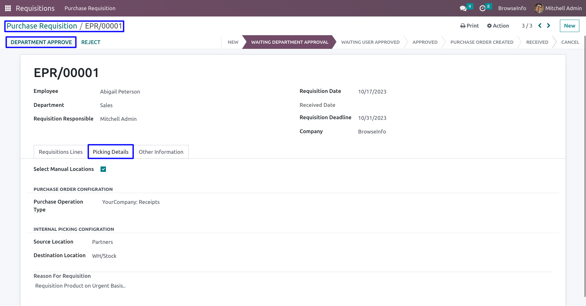
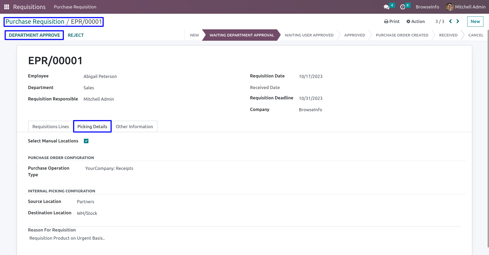

Construction Project Management Odoo Apps
Construction Management Odoo apps, allows you manage construction process with system which can used for any construction agency contractor or company. With this Odoo apps you can manage cost center and Cost Header for construction project which will use for Work Package creation. You can manage material cost , subcontract cost, labor work cost, work package costing using BOQ(Bill Of Quantity). This Odoo module helps to manage Material planning and Consumed Materials of each job order(task) for construction projects, based on material request and planning you can easily create purchase order for the products/material required for the construction site, also you can able to print different construction reports.


 
